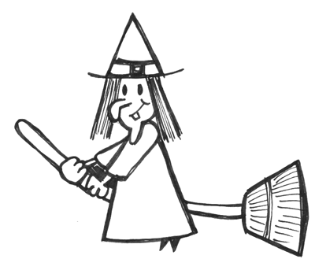

As meigas son mulleres místicas que gustan da natureza, da menciña... e da música. De feito disque na saia das meigas hai un lagarto pintado, e cando as meigas bailan, o lagarto move o rabo ;)
A través desta páxina podes facerlles chegar as túas preguntas sobre música, e elas remexerán no seu caldeiro e contactarán os espritos dos devanceiros para responderche. Lembra que podes empregar calisquera dos tres idiomas soportados que queiras, independentemente daquel no que esteas a ve-las suxerencias neses intres!
Estas son algúns exemplos de preguntas en galego:
The meigas are mystical women that like nature, medicine... and music. In fact, they say that "rock and roll" in based on actual movements from meiga dances when they go out at night to party in the forests ;)
Through this page you can send them your questions about music, and they will stir their cauldron and contact the spirits of the ancestors to answer you. Remember you can use any of the three supported languages you like, regardless of the one you are reading the suggestions on at that moment!
These are some examples of questions in English:
Las meigas son mujeres místicas a las que les gusta la naturaleza, la medicina... y la música. De hecho se dice que la expresión "mover el esqueleto" la inventaron ellas, y tiene un origen bastante literal ;)
A través de esta página puedes hacerles llegar tus preguntas sobre música, y ellas removerán en su caldero y contactarán los espíritus de los antepasados para responderte. ¡Recuerda que puedes emplear cualquiera de los tres idiomas soportados que quieras, independientemente de aquel en el que estés viendo las sugerencias en esos momentos!
Estos son algunos ejemplos de preguntas en castellano: